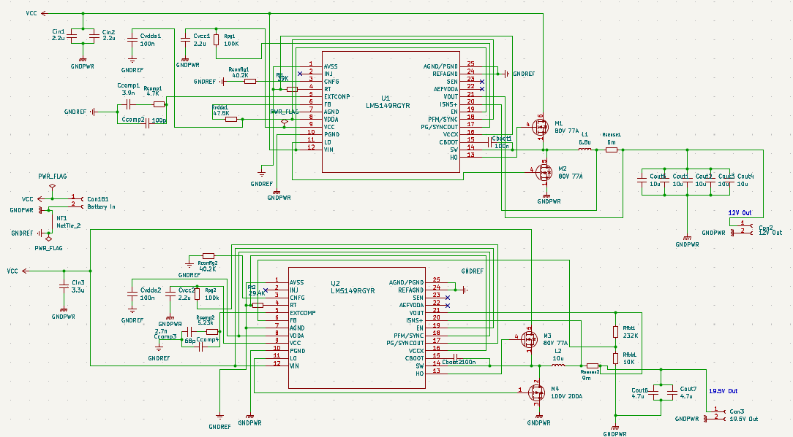
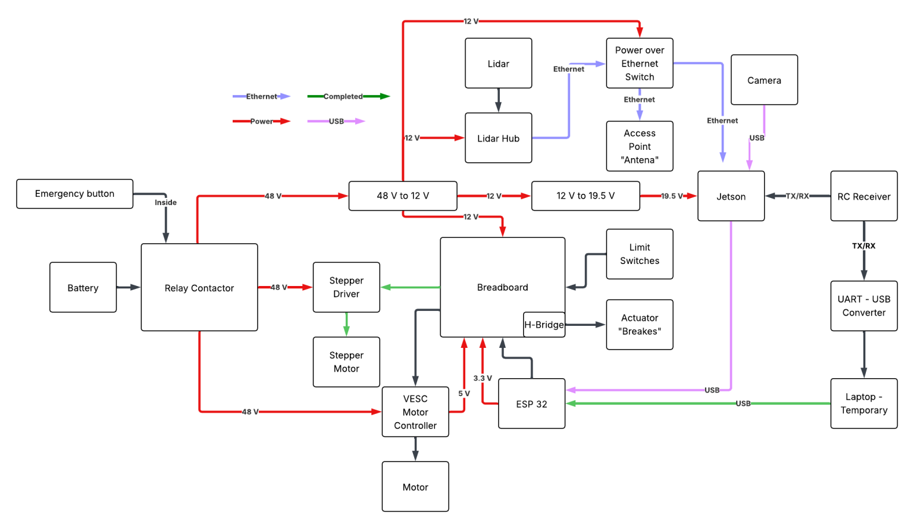

84 V to 12 V Buck Converter
Purdue IEEE Autonomous Motorsports
As part of Purdue IEEE Autonomous Motorsports, I designed the schematic for a DC-DC converter that steps the autonomous kart's battery voltage down to 12 V. That 12 V powers the kart's lidar system.

Design
The main first step was thinking through the design as a whole (what this buck converter was going to be used for). My partners for this project helped implement a basic layout for the autonomous kart as a whole, and this specific component was needed to power the karts Lidar and Jetson.

After understanding the use for the PCB and the requirements for the systems it would be interacting with, I worked from the kart's power requirements and used TI's WEBENCH Power Designer to pick the components. TI Webench helped a lot, since I'd never touched power electronics before, and didn't know where to begin in terms of components to use, and what variables were important in it's design. The converter is built around the LM5149-Q1 buck controller, and I drew the schematic in KiCad.
Simulation
With help from my mentor, I simulated core converter components in LTspice to check that it worked. This was mainly to confirm that some of the smaller circuitry (such as with the MOSFETS) was functional.